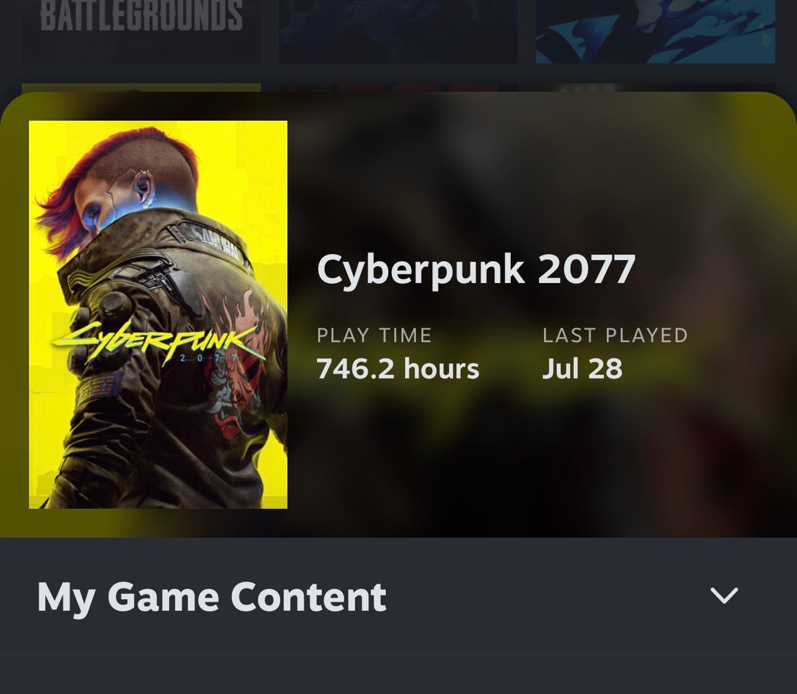

700시간 게임 한 사람으로써 시즌1도 나오자마자 보고, 시즌2고 마찬가지였음.
서른 먹고 만화본다고 밤샜다. 워싱턴 현재 시각 새벽 5시
일단 사이버펑크2077 주제인 "전설로 죽느냐, 아무개로 사느냐" 없음.
캐릭터 마다 관계가 깊어지는 표현을 못함.
감정묘사 너무 부족함.
시즌1에서 데이비드가 크류들을 잃고, 강박증이 생기며 점점 사이버사이코가 되는걸 잘 묘사했는데, 시든2는 그런거 없음.
갑자기 D랑 AI랑 사랑에 빠진듯한 연출 개뜬금없음.
제작진이 시즌1보다 훨씬 슬플거라는데 하나도 안슬프고 2077식 시한부적 해피엔딩임... 팬앰 엔딩 보는거라고 생각하면 됨.
개인적으로 제일 기대했던 위크 킹즐리는 중요한 역할이 아님. 스토리에 없어도 진짜 아무 문제가 없음. 캐릭터 설명만 보면, 임플란트 다 뺏겼어도 노련함으로 크류에 도움 주다가 최종결전에서 사이코화 되어서 보스랑 싸울줄 알았는데 암것도 안한... 옷벗고 달리고 끝...
그리고 아담스매셔전 같은 최종 전투 없음.
시즌 1 8/10점이면 시즌2 3/10점이다.
사펑은 개잼있으니 ㄱㄱ 솔직히 사펑2 볼 시간에 개게임함